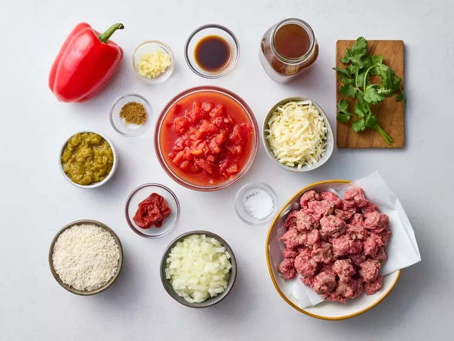
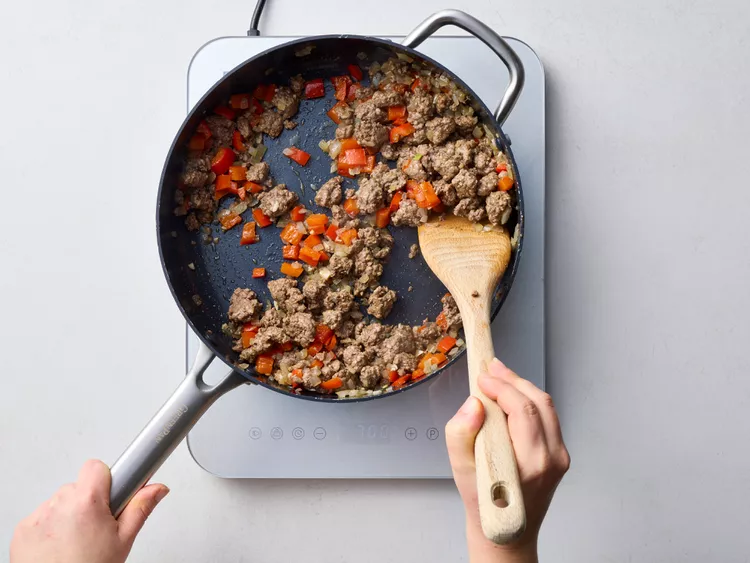
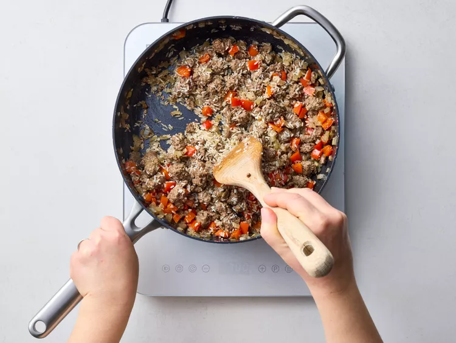
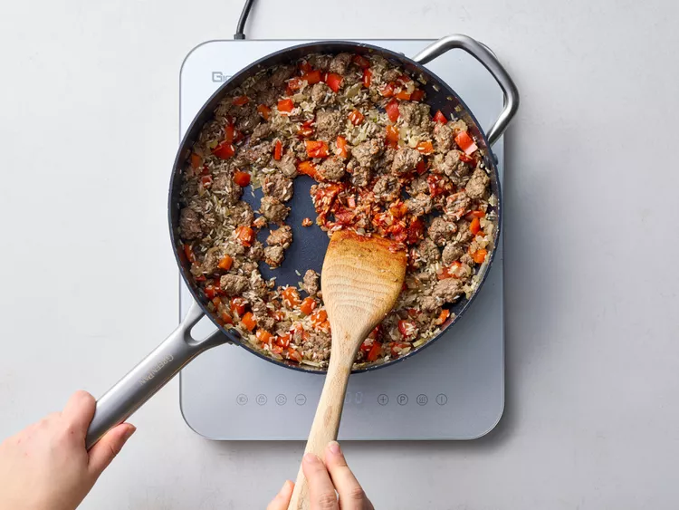
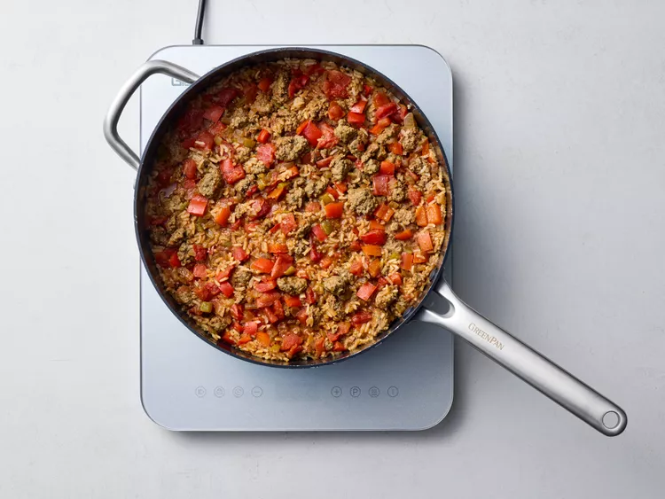
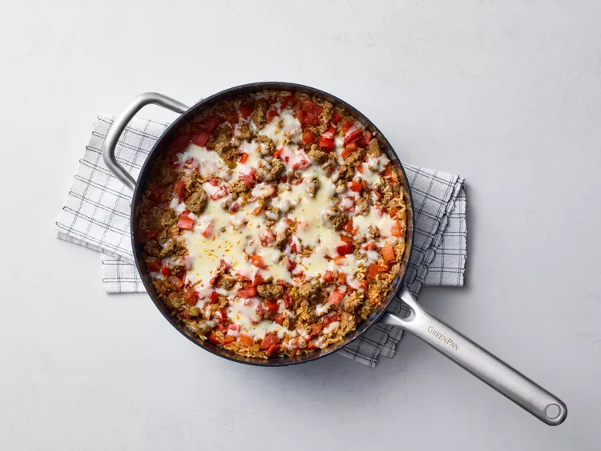
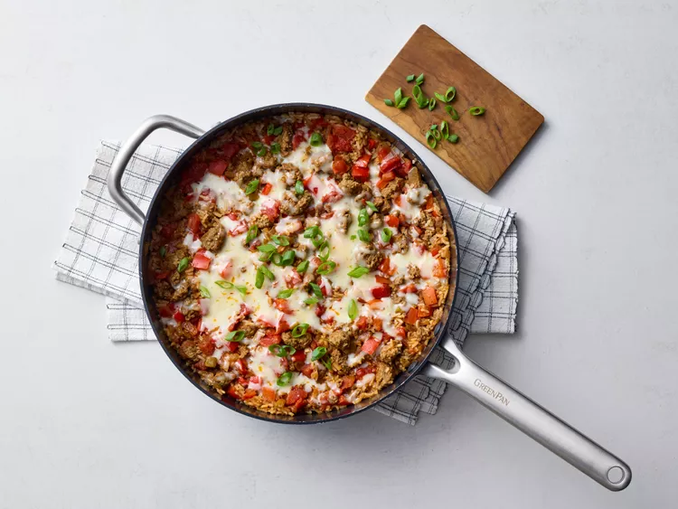

Ингридиенты:
- 900 г говяжьего фарша
- 1 луковица, нарезанная
- 1 красный болгарский перец, нарезанный
- 4 зубчика чеснока, измельченных
- 400 г длиннозерного белого риса
- 1 ч. ложка соли
- 1 ч. ложка молотого тмина
- 4 ст. ложки томатной пасты
- 2 банки (по 410 г) нарезанных кубиками томатов
- 720 мл (3 стакана) говяжьего бульона с пониженным содержанием соли
- 2 банки (по 115 г) нарезанных зеленых чили
- 4 ч. ложки соуса Вустершир
- 200 г тертого сыра Чеддер или Монтерей Джек
- 2 ст. ложки нарезанного зеленого лука или кинзы
Приготовление:
-
Шаг 1
Подготовьте все ингредиенты.
 -
Шаг 2
Готовьте говяжий фарш, лук, красный болгарский перец и чеснок в большой высокой сковороде на среднем огне, пока говядина не перестанет быть розовой, а овощи не станут нежными, периодически помешивая, чтобы разбить крупные куски фарша, около 8 минут; слейте жир.
 -
Шаг 3
Добавьте рис, соль и кумин. Готовьте, помешивая, в течение 1 минуты.
 -
Шаг 4
Добавьте томатную пасту. Готовьте, помешивая, в течение 1 минуты.
 -
Шаг 5
Добавьте нерафинированные помидоры, нарезанные кубиками, бульон, нарезанный кубиками чили и вустерширский соус. Доведите до кипения. Уменьшите огонь, накройте крышкой и варите, пока жидкость не уменьшится, а рис не станет нежным, около 20 минут.
 -
Шаг 6
Снимите сковороду с огня. Посыпьте сыром. Накройте крышкой и дайте постоять, пока сыр не расплавится, около 5 минут.
 -
Шаг 7
Украсьте зеленым луком.
